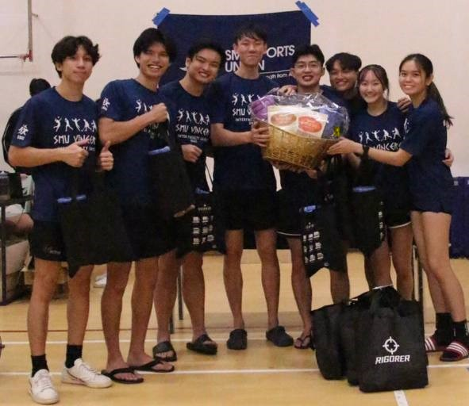
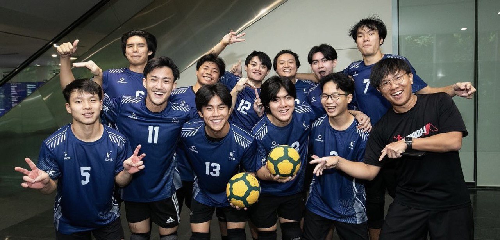
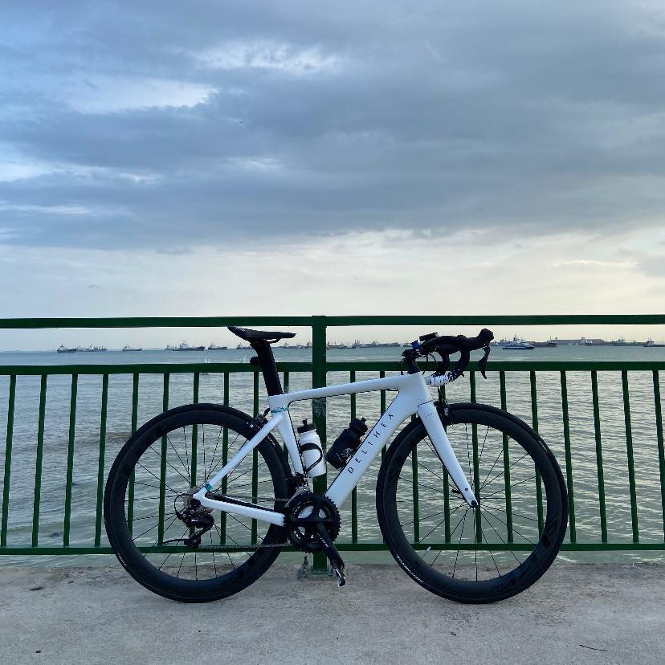

Hobbies
Sports
Ever since young, I love to play sports of any kind. In Primary School,
I was in my school's Volleyball Club and played in inter-zone
competitions. I did not have any opportunity to play the sport during my
secondary school days so I had to forgo the sport, only to play it again
during University for my inter-faculty games.
During my University days, I was in the school's Tchoukball Club and
also played in inter-school competitions.
I also love cycling! I fell in love with this hobby when I was young as
I used it to transport myself around. When I was in Polytechnic, I got
my first road bike and I fell in love this hobby even more.


